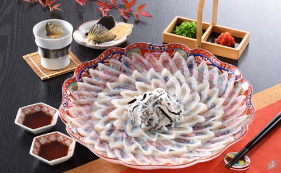
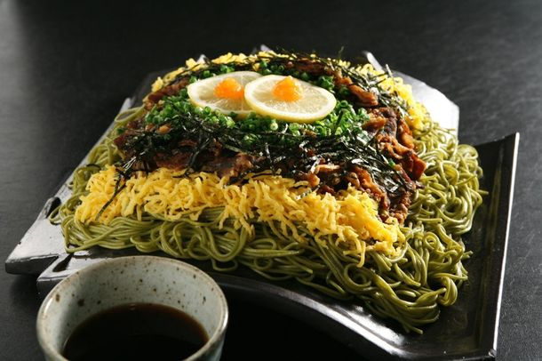
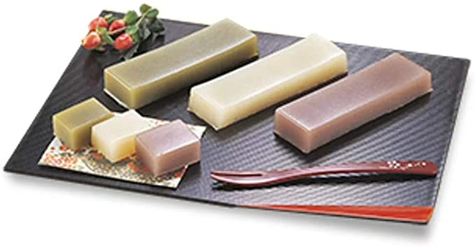

グルメ
今回は自分の地元・山口県のグルメの魅力を紹介したいと思います。
フグの刺身
初めにフグの刺身です。山口県や大阪府など西日本を中心にフグ料理が作り上げらました。特に山口県下関市ではフグの本場と呼ばれ有名。
瓦そば
瓦そばは、山口県下関市豊浦町発祥の料理。 熱した瓦の上に茶そばと具をのせて、温かいめんつゆで食べます。材料が売られているので、自宅でも作るのが簡単。
山口外郎
他の地域でも生産され、馴染み深いお菓子ですが、他の地域違う点は、ふつうは米粉で作られているのに対して、「山口外郎」はわらび粉から作られていて、他とは違う味を味わえます。


